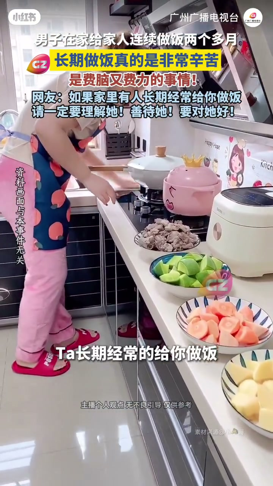

内容要点
广州广播电视台剪辑的短访谈：男子在家连续给家人做饭两个多月后说，偶尔下厨和每天都做完全不是一回事——不论有没有空、喜不喜欢、开不开心都得做，还要顾全家人的口味，想到做饭甚至会产生恐惧。结尾呼吁：家里若有人长期做饭，一定要理解、善待、对她/他好。
知识结构
[00:00→00:30]
立题
偶尔做饭 vs 每天都要做，不是同一概念。
[00:30→00:46]
日常负担
不管有没空、喜不喜欢都要做；还要考虑全家口味；想到做饭就恐惧。
[00:46→00:52]
呼吁
长期为你做饭的人，请理解、善待、对她/他好。
总结
长期做饭的辛苦在「不可选择」和「要伺候众人口味」，不是偶尔秀一盘菜能等价理解的。
00:00-00:52每天都做：不可选择的家务负荷
画面为男子对镜口述，叠加字幕「连续做饭两个多月」「长期做饭非常辛苦，费脑又费力」。他对比：偶尔做是兴趣或表演；每天做则无视时间、心情与喜好，必须开工，还要迁就全家人的口味。
说到「一想到又要做饭就恐惧、有心理阴影」。收束不讲菜谱，只讲关系：若家里有人长期经常做饭，请理解、善待、对对方好——把隐形家务劳动说成需要被看见的付出。
[00:03] 字幕：男子连续做饭两个多月，长期做饭很辛苦
Subtitle: he’s cooked for two-plus months straight—daily cooking is hard
[00:35] 口述：没空不喜欢也要做，还要顾全家口味
VO: even with no time or liking it, you still cook—and please the whole family

[00:48] 收束呼吁：理解、善待长期做饭的人
Closing appeal: understand and be kind to people who cook every day
完整转录（17段）
以下文本由 Whisper medium 模型自动转录，可能存在少量识别误差，已尽可能修正。
我发现这个偶尔做法和这个每天都要做法
但是啊但是你这个每天都要做法的人他又不一样
你每天做饭是不管你有没有空
你有没有时间
你喜不喜欢
你开不开心
你有没有心情
你都要去做
而且每次做饭你都还要考虑全家人的口吻
我现在每天只要一想到又要做饭
我真的就是恐惧的
我都有心理阴影了
真的
所以说如果你家里有一个人他长期经常的给你做饭
请你一定要理解他
要善待他
要对他好